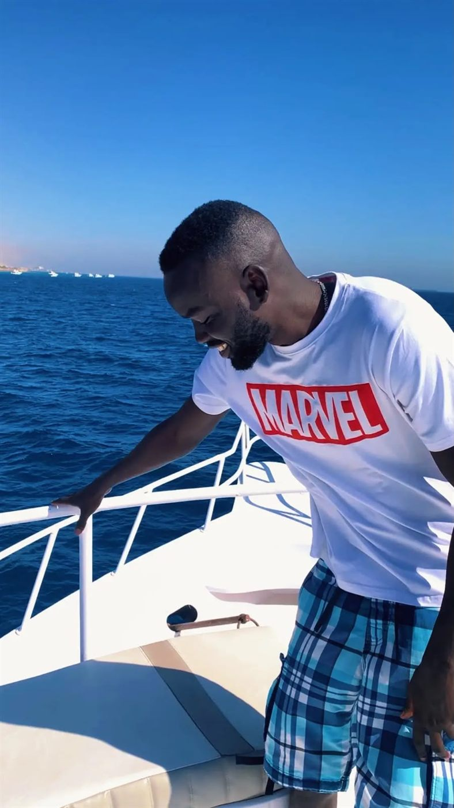

ERP & automation
Managing and customising Odoo ERP modules, and building AI-powered automated messaging with n8n.
I’m Tap Kuol Hoth, a Software Engineer at CardoO and a Computer & Information Sciences graduate of Ain Shams University — originally from Bentiu, South Sudan. From C++ robots to real-world software, I love turning ideas into things that work.
Studied, worked, trained & led at
From business systems and websites to AI automation and networks — software that keeps a company running.
Managing and customising Odoo ERP modules, and building AI-powered automated messaging with n8n.
Building and maintaining websites with HTML5, CSS3 and JavaScript — including the CardoO company site.
Designing databases with SQL (MySQL, SQL Server), with CCNA and CCNP networking training.
Rover-1 is a four-wheel-drive robotic car that my team of four built in our first year. It finds its own way around obstacles. Its servo-mounted ultrasonic sensor scans ahead, and when something blocks the path the car turns left, turns right or reverses. It can also be controlled from a laptop. Programmed in C++.
Our graduation project at Ain Shams University, graded Excellent: an AI system that analyses football match videos to track players, score their performance and predict how they will perform, shown in an interactive dashboard.
General system covering software engineering, algorithms, databases, AI, cryptography and network security, with C++, C#, Java and Python; specialised in Information Systems. Graduated 2 July 2024.
Member of the Tech Department at CardoO, an Egyptian consumer-electronics and IoT company.

Team tripA day sailing the Red Sea with the CardoO team.
 Culture & history
Culture & history
Seeing former president Anwar Sadat’s military uniform and belongings at the Bibliotheca Alexandrina’s Sadat museum.
From my first lessons in Nuer in South Sudan, through secondary school in Sudan, to a degree and a career in Egypt.
From managers, teammates, teachers and organisers I’ve worked with.
Add a short quote from a manager or colleague — what you worked on together and the difference you made.
A quote from a lecturer or mentor about your skills, attitude and how you grew during your studies.
A quote from an event organiser or client about a talk, workshop or project you delivered.
Have a project, a role or an idea in mind? Send a message — I usually reply within a day or two.